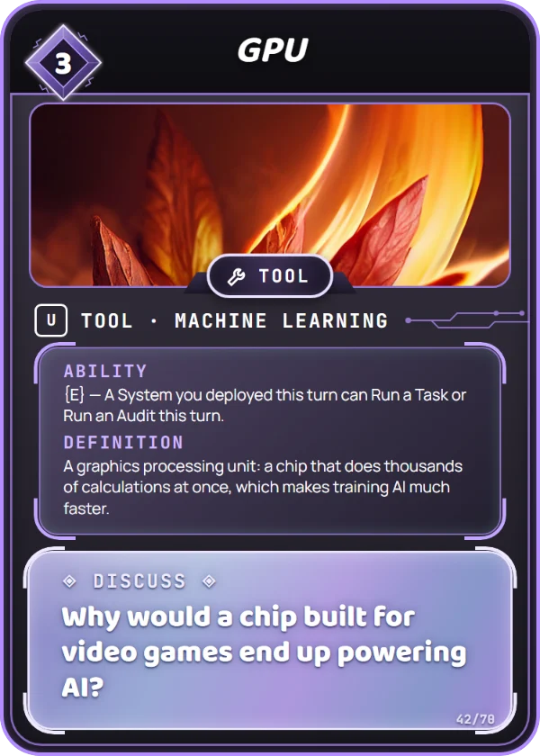

Machine Learning
A graphics processing unit: a chip that does thousands of calculations at once, which makes training AI much faster.
Chips first built for video-game graphics turned out to be great at the math AI needs, because they do thousands of small calculations at once.
Have one person add up ten numbers while ten people each add one pair at the same time. Which finishes first?
Why would a chip built for video games end up powering AI?
Turn this card sideways to a System you deployed this turn can Run a Task or Run an Audit this turn. It costs 3 Data to play, and you can put it in your Training Set. How to play